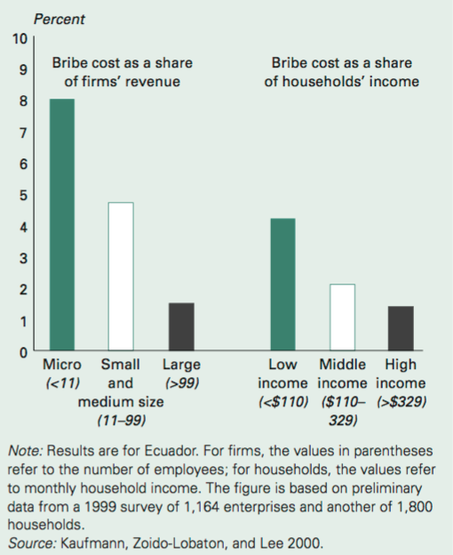

Mon nom est ABBAS tahar, je suis étudiant en licence 3 géographie et aménagement à l'université d'avignon et des pays de vaucluse. Cette année j’ai eu la chance de faire des cours en SIG avec Monsieur Redjimi ce qui m’a poussé à faire une production de site web. Il porte sur << la corruption dans le monde>>
La corruption est un phénomène qui comporte de nombreux
aspects différents, et il est donc difficile d'en donner une définition précise
et complète. Cependant, au cœur de la plupart des définitions de la
corruption se trouve l'idée qu'un acte de corruption implique l'abus du pouvoir
confié à des fins privées. Les exemples classiques incluent la corruption,
le clientélisme et le détournement de fonds. D’autre exemple de corruption,
souvent plus subtils et parfois même légaux, incluent le lobbying et le
favoritisme.
Alors que les données à long terme sur la corruption sont
très limitées, des exemples historiques suggèrent que la corruption a été une
caractéristique persistante des sociétés humaines au fil du temps et de
l'espace.
Comme on peut le voir, les cinq pays avec les scores les plus élevés (et donc perçus comme les plus « propres ») sont le Danemark, la Nouvelle-Zélande, la Finlande, Singapour et la Suède. À l'autre extrême, les pays avec les scores les plus bas (et la corruption perçue la plus élevée) sont la Somalie, la Syrie, le Soudan du Sud, le Yémen et la Corée du Nord. Sur la période 2012-2018, nous pouvons voir que les scores sont assez stables et que les changements drastiques de classement ne sont pas très courants.
Les données visualisées ici reposent sur la perception
d'experts. Nous analysons maintenant des données représentant les perceptions
des personnes ordinaires confrontées à la corruption dans le monde.
La visualisation montre la perception nationale moyenne de
la corruption, notée sur une échelle de 1 à 5 par les personnes interrogées qui
ont posé la question : « Dans quelle mesure pensez-vous que la
corruption est un problème dans le secteur public de ce
pays ? ». Les données datent de 2013.
Le Baromètre mondial de la corruption produit par
Transparency International demande aux individus de tous les pays s'ils
perçoivent des institutions spécifiques comme étant corrompues.
Les estimations montrent que, à l'échelle mondiale, les gens
perçoivent les forces de police nationales et le corps législatif comme
particulièrement corrompus.
Cette visualisation approfondit les perceptions de la
corruption, en particulier dans le contexte de la politique.
Comme nous pouvons le voir, il existe une hétérogénéité
substantielle entre les pays, et les modèles montrent à nouveau des différences
en ce qui concerne la perception générale de la corruption. En Grèce et en
Italie, par exemple, environ 90 % des personnes interrogées considèrent que les
partis politiques sont très corrompus. Cela les classe parmi les dix
premiers pays ayant la perception la plus élevée de la corruption politique .
Pour ceux qui n'ont ni argent ni relations, le fait de payer même de petits pots-de-vin pour accéder aux services publics de base tels que la santé publique ou la police peut avoir des conséquences importantes. En fait, la petite corruption sous forme de pots-de-vin agit souvent comme un impôt régressif, puisque le fardeau tombe généralement de manière disproportionnée sur les pauvres.
Si la confusion entre l’intérêt privé et l’intérêt public tend à devenir monnaie courante dans les démocraties occidentales, il convient toutefois de relativiser ce constat en notant que le degré de perméabilité à la corruption varie d’un État à l’autre. La France n’échappe pas à ce mouvement de corruption et l’on peut dire que depuis la décentralisation le mouvement a pris de l’ampleur. Si les pouvoirs publics ont agi depuis presque vingt ans pour multiplier les contrôles et créer des instances nouvelles de prévention (service central de prévention de la corruption, mission interministérielle d’enquête sur les marchés publics...), il est curieux de constater que malgré les condamnations qui ont commencé à être prononcées à rencontre de certains hommes politiques, la prévention n’en a pas pour autant été renforcée. On pourrait même ajouter qu’au regard de la proportion d’entre eux qui font appel de la décision du juge, ils n’ont sans doute pas perçu l’ampleur du phénomène ni compris l’intérêt des sanctions financières et électorales. Pourtant, le caractère dissuasif et pédagogique de ces mesures nouvelles pourrait faire reculer la corruption en favorisant une forme d’autodiscipline.
created with
Website Builder Software .